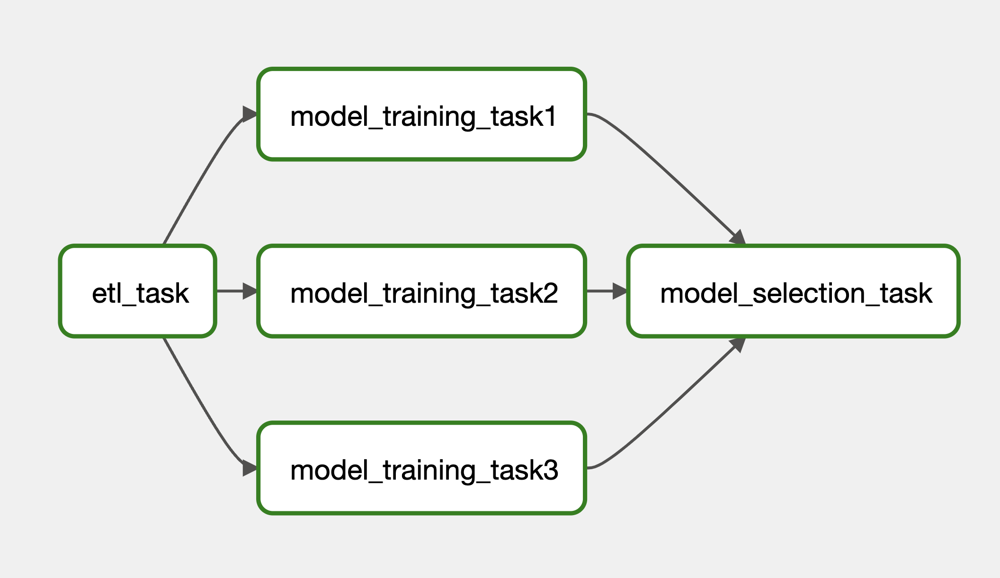

Introduction
This article aims to introduce how to write an airflow DAG. We will go through the basic BashOperator and PythonOperator, using Airflow TaskFlow decorators, Airflow context, passing information between tasks using XComs, branching tasks based on conditions, and more.

DAG Location
This section will introduce how to write a Directed Acyclic Graph (DAG) in Airflow. Within the Docker image’s main folder, you should find a directory named dags. Create one if you do not. This directory should link to the containers as it is specified in the docker-compose.yaml.
x-airflow-common:
&airflow-common
image: ${AIRFLOW_IMAGE_NAME:-apache/airflow:2.6.3}
environment:
...
volumes:
- ${AIRFLOW_PROJ_DIR:-.}/dags:/opt/airflow/dags
- ${AIRFLOW_PROJ_DIR:-.}/logs:/opt/airflow/logs
- ${AIRFLOW_PROJ_DIR:-.}/config:/opt/airflow/config
- ${AIRFLOW_PROJ_DIR:-.}/plugins:/opt/airflow/plugins
- ${AIRFLOW_PROJ_DIR:-.}/dag-inputs:/opt/airflow/dag-inputs
- ${AIRFLOW_PROJ_DIR:-.}/dag-outputs:/opt/airflow/dag-outputsInside the dags directory, create a file named trial_dag.py with the following content. It will create a DAG in Airflow and you can find it in the main page of Airflow (default: localhost:8080).
Basic DAG File
Below shows an example of a DAG.
from airflow import DAG
from datetime import datetime, timedelta
from airflow.operators.bash import BashOperator
from airflow.operators.python import PythonOperator
default_args = {
"owner": "airflow",
"retries": 5,
"retry_delay": timedelta(minutes=2)
}
def _task2(w):
print(w)
with DAG(
dag_id="trial_dag",
description="A trial dag",
default_args=default_args,
start_date=datetime(2023,8,1),
# end_date=datetime(2024,7,31),
schedule="@once" # Use `schedule_interval` if using Airflow 2.3 or below
) as dag:
task1 = BashOperator(
task_id="task1",
bash_command=" echo 'hello'"
)
task2 = PythonOperator(
task_id="task2",
python_callable=_task2,
op_kwargs={"w": "world"}
)
task1 >> task2 # The order of task being executed.The snippet above shows a simple DAG definition file. It first imports the required modules from airflow and datetime. Then define the default_args for the dag (see more available key-value pairs here).
There are multiple ways to initialise a dag. This time we used with DAG() as dag: with dag_id, description, schedule, etc. We will see some other methods to define a dag in later sections.
A task in a dag is an operator object. There are two basic operators: BashOperator and PythonOperator. The BashOperator is used to execute bash command and the PythonOperator is used to execute Python functions. The name of the Python function is passed to the python_callable parameter and the arguments of the primitive function can be passed through the operator using the op_kwargs and op_args arguments.
Finally we need to specify the order of the tasks by task1 >> task2.
Custom Operator
We can also create custom operators inside the plugins directory which is located at the main Docker image directory. Please make sure the directory is created and specified in docker-compose.yaml. Please also create an empty __init__.py in the plugins directory. Now, we can create a .py file inside the plugins directory to create operators like below.
# plugins/hello_operator.py
from airflow.models import BaseOperator
class HelloOperator(BaseOperator):
def __init__(self, name, *args, **kwargs):
super().__init__(*args, **kwargs)
self.name = name
def execute(self, context):
self.log.info("Input `name`: {self.name}.") # Logging
message = f"Hello {self.name}"
print(message)To use the custom operators, simply import the operators from a module as usual.
from hello_operator import HelloOperator
with Dag() as dag:
task1 = HelloOperator(task_id="task1", name="Bob")
task1Airflow Context
Like Gibhub context (see this article), Airflow also provide a way to access information about the running dag and task. As seen in the custom operator, the execute method in the operator class takes in a context argument.
Below shows two examples on how to use these context information.
# plugins/hello_operator.py
from airflow.models import BaseOperator
class HelloOperator(BaseOperator):
template_fields = ['name']
def __init__(self, name, *args, **kwargs):
super().__init__(*args, **kwargs)
self.name = name
def execute(self, context): # context is a TypedDict. See below section
message = f"The name of this DAG is {self.name}"
print(message)
ts = context["ts_nodash"] # context is a TypedDict. See below section
print(f"This DAG started at {ts}")The above snippet describe how to use the context variable inside a custom operator. One can also use jinja syntax to specify the information like below. Just remember to specify which argument will be using jinja syntax in the custom operator class (see above template_fields = ['name']).
# dags/hello_dag.py
from hello_operator import HelloOperator
with Dag() as dag:
task1 = HelloOperator(task_id="task1", name="{{ dag.dag_id }}")
task1A detailed list of available values from context can be found in [appendix][#appendix].
Taskflow
This section describe how to write a DAG with the TaskFlow API paradigm. The paradigm converts functions into Airflow DAGs or tasks with the dag and task decorators. Below shows a simple DAG written in this paradigm.
from airflow.decorators import task, dag
from airflow.operators.python import get_current_context
from datetime import datetime, timedelta
default_args = {
"owner": "airflow",
"retries": 0,
"retry_delay": timedelta(minutes=2)
}
@dag(
dag_id="trial_dag",
schedule="@once",
start_date=datetime(2023,8,1),
default_args=default_args
)
def trial_dag():
@task(task_id="task1")
def task1():
print("hello")
@task(task_id="task2")
def task2(name):
context = get_current_context() # Use context within TaskFlow API
print(f"The name of the DAG is {name}")
dag_loc = context["dag"].fileloc
print(f"The location of the DAG is {dag_loc}")
task1() >> task2("{{ dag.dag_id }}") # Set the order of tasks
trial_dag() # Initialise the DAGXComs
Often times, we would like to pass some information from the upstream task to the downstream task. In Airflow, we can achieve this via the XComs. Please note that XComs is not designed to transfer large data. If you are using MySQL as the Airflow database, you can only transfer information within 64kb. You can define your own XComs backend if needed. Yet, this is out of the scope of this article.
There are two ways to send information in one task.
- Simply return the value (see
ModelTrainingOperator) - Using
ti.xcom_push(seeETLOperator)
The pushed values are stored in the Airflow context in the form of key-value pairs. That means, there is a specific key to each returned or pushed value. The key for the first method is always return_value but you can specify the key you want in the second method.
As the pushed values are stored in the Airflow context, it can be accessed via the context argument (see ModelSelectionOperator) or via the jinja template (see model_training_task1). Yet, the values pulled from jinja template are always in text form.
The script below mimics a ML model training pipeline, which utilises the XComs to transfer information between tasks.
from airflow import DAG
from datetime import datetime, timedelta
from airflow.models import BaseOperator
from random import randint
import numpy as np
default_args = {
"owner": "airflow",
"retries": 0,
"retry_delay": timedelta(minutes=2)
}
class ETLOperator(BaseOperator):
template_fields = ['name']
def __init__(self, name, *args, **kwargs):
super().__init__(*args, **kwargs)
self.name = name
def execute(self, context):
self.log.info(f"Input parameter: {self.name}")
context["ti"].xcom_push(key="dag_id", value=self.name)
class ModelTrainingOperator(BaseOperator):
template_fields = ['name']
def __init__(self, name, *args, **kwargs):
super().__init__(*args, **kwargs)
self.name = name
def execute(self, context):
self.log.info(f"Previous output: {self.name}")
task_id = context["ti"].task_id
return {"task_id": task_id, "score": randint(1, 10)}
class ModelSelectionOperator(BaseOperator):
def __init__(self, models, *args, **kwargs):
super().__init__(*args, **kwargs)
self.models = models
def execute(self, context):
models = self.models.split(",")
result = []
for model in models:
result.append(context["ti"].xcom_pull(model))
self.log.info(result)
best_model = result[np.argmax([x["score"] for x in result])]
self.log.info(f"Best model: {best_model}")
with DAG(
dag_id="trial_dag",
default_args=default_args,
start_date=datetime(2023,8,1),
schedule="@once",
description="A trial dag"
) as dag:
etl_task = ETLOperator(
task_id="etl_task",
name="{{ dag.dag_id }}"
)
model_training_task1 = ModelTrainingOperator(
task_id="model_training_task1",
name="{{ ti.xcom_pull(task_ids=['etl_task'], key='dag_id') }}"
)
model_training_task2 = ModelTrainingOperator(
task_id="model_training_task2",
name="{{ ti.xcom_pull(task_ids=['etl_task'], key='dag_id') }}"
)
model_training_task3 = ModelTrainingOperator(
task_id="model_training_task3",
name="{{ ti.xcom_pull(task_ids=['etl_task'], key='dag_id') }}"
)
model_selection_task = ModelSelectionOperator(
task_id="model_selection_task",
models="model_training_task1,model_training_task2,model_training_task3"
)
etl_task >> \
[model_training_task1, model_training_task2, model_training_task3] >> \
model_selection_task
Branching
The previous example will run all three model_training tasks after the etl_task has finished. This section shows how to do branching, which means to execute a particular task based on some conditions.
from airflow import DAG
from datetime import datetime, timedelta
from airflow.models import BaseOperator
from airflow.utils.trigger_rule import TriggerRule
from airflow.operators.branch import BaseBranchOperator
from airflow.operators.empty import EmptyOperator
from airflow.utils.edgemodifier import Label
from random import randint, choice
default_args = {
"owner": "airflow",
"retries": 0,
"retry_delay": timedelta(minutes=2)
}
class CriteriaBranchingOperator(BaseBranchOperator):
def __init__(self, methods, *args, **kwargs):
super().__init__(*args, **kwargs)
self.methods = methods
def choose_branch(self, context):
return choice(self.methods)
class ModelTrainingOperator(BaseOperator):
def execute(self, context):
task_id = context["ti"].task_id
return {"task_id": task_id, "score": randint(1, 10)}
with DAG(
dag_id="trial_dag",
default_args=default_args,
start_date=datetime(2023,8,1),
schedule="@once",
description="A trial dag"
) as dag:
etl_task = EmptyOperator(
task_id="etl_task"
)
methods = ["method_A", "method_B", "method_C", "method_D"]
criteria_selection = CriteriaBranchingOperator(
task_id="criteria_selection",
methods=methods
)
etl_task >> criteria_selection
deploy_model = EmptyOperator(
task_id="deploy_model",
trigger_rule=TriggerRule.NONE_FAILED_MIN_ONE_SUCCESS
)
for method in methods:
method_task = ModelTrainingOperator(
task_id=method
)
criteria_selection >> Label(method) >> method_task >> deploy_model
Triggers
This section introduce triggers to start a DAG from another DAG. We will go through 2 different methods:
- Datasets
- TriggerDAGRunOperator
Datasets
To trigger a DAG using Datasets, the Dataset class must be imported first. Then define a dataset with an uri. In one of the task in the trigger_dag, set the outlets to a list of the defined dataset. Finally, in the target_dag, set the schedule to be a list of datasets that will trigger the DAG to run. See an example below.
from airflow import Dataset, DAG
from airflow.models import BaseOperator
from datetime import datetime
dataset = Dataset("/opt/airflow/dag-outputs/test_data.json")
class TriggerOperator(BaseOperator):
def execute(self, context):
outlets = context["outlets"]
ts = context["ts_nodash"]
for outlet in outlets:
with open(outlet.uri, "w") as f:
f.write(ts)
self.log.info(context["outlets"])
# [2023-08-13, 21:34:06 UTC] {trial_dag.py:15} INFO -
# [Dataset(uri='/opt/airflow/dag-outputs/test_data.json', extra=None)]
self.log.info("Triggering Dataset")
# [2023-08-13, 21:34:06 UTC] {trial_dag.py:16} INFO - Triggering Dataset
class ActionOperator(BaseOperator):
def execute(self, context):
self.log.info(context["dag"].schedule_interval)
# [2023-08-13, 21:34:06 UTC] {trial_dag.py:20} INFO - Dataset
self.log.info(context["dag"].dataset_triggers)
# [2023-08-13, 21:34:06 UTC] {trial_dag.py:21} INFO -
# [Dataset(uri='/opt/airflow/dag-outputs/test_data.json', extra=None)]
with DAG(
dag_id="trigger_dag",
schedule="@once",
start_date=datetime(2023,8,1)
) as dag:
trigger_task = TriggerOperator(
task_id="trigger_task",
outlets=[dataset]
)
trigger_task
with DAG(
dag_id="target_dag",
schedule=[dataset],
start_date=datetime(2023,8,1)
) as dag:
action_task = ActionOperator(
task_id="action_task"
)
action_taskTriggerDAGRunOperator
Another method to trigger a DAG to run is to use the TriggerDAGRunOperator. In the trigger_dag, create a task with TriggerDAGRunOperator, set the trigger_dag_id to the DAG you wish to trigger. You can also pass some information to the target_dag using the conf argument as shown below.
In the target_dag, you can retrieve the conf by accessing context["dag_run"].conf.
from airflow import DAG
from airflow.models import BaseOperator
from airflow.operators.trigger_dagrun import TriggerDagRunOperator
from datetime import datetime
class ActionOperator(BaseOperator):
def execute(self, context):
# Retrieving conf from previous dag in TriggerDagRunOperator
self.log.info(context["dag_run"].conf)
# {"upstream_dag_id": "trigger_dag", "last_update": "..."}
with DAG(
dag_id="trigger_dag",
start_date=datetime(2023,8,1),
schedule="@once"
) as dag:
trigger_task = TriggerDagRunOperator(
task_id="trigger_task",
trigger_dag_id="target_dag",
conf = {
"upstream_dag_id": "{{ dag.dag_id }}",
"last_update": "{{ ts_nodash }}"
}
)
trigger_task
with DAG(
dag_id="target_dag",
start_date=datetime(2023,8,1),
schedule="@once"
) as dag:
action_task = ActionOperator(
task_id="action_task"
)
action_taskVariables
This section will cover how to define and use variables in Airflow context.
Set Up Variables
There are two ways to set up Airflow variables.
- On Airflow main page, go to Admin –> Variables and set up there.
- Set up environment variables with prefix
AIRFLOW_VAR_<NAME_OF_VAR>.
Calling Variables
from airflow import DAG
from airflow.models import BaseOperator
from datetime import datetime
from airflow.models import Variable
class TrialOperator(BaseOperator):
template_fields = ["json_var", "value_var"]
def __init__(self, json_var, value_var, *args, **kwargs):
super().__init__(*args, **kwargs)
self.json_var = json_var
self.value_var = value_var
def execute(self, context):
# Access from jinja template with type dict
self.log.info(self.json_var)
# Access from Variable with type dict
self.log.info(Variable.get("my_var", deserialize_json=True))
# Access from jinja template with type str
self.log.info(self.value_var)
# Access from Variable with type str
self.log.info(Variable.get("my_var", deserialize_json=False))
# The following will fail
self.log.info(context["var"]["json"]["my_var"])
# The following will fail
self.log.info(context["var"]["value"]["my_var"])
with DAG(
dag_id="trial_dag",
start_date=datetime(2023,8,1),
schedule="@once"
) as dag:
task1 = TrialOperator(
task_id="task1",
json_var="{{ var.json.my_var }}",
value_var="{{ var.value.my_var }}"
)
task1
# [2023-08-13, 18:12:03 UTC] {trial_dag.py:16} INFO - {'name': 'Bob', 'age': 21}
# [2023-08-13, 18:12:03 UTC] {trial_dag.py:19} INFO - {'name': 'Bob', 'age': 21}
# [2023-08-13, 18:12:03 UTC] {trial_dag.py:22} INFO - {"name": "Bob", "age": 21}
# [2023-08-13, 18:12:03 UTC] {trial_dag.py:25} INFO - {"name": "Bob", "age": 21}Encrypt Values
To encrypt the value of variables, first generate a fernet_key from the following.
from cryptography.fernet import Fernet
Fernet.generate_key().decode()
# 'bbg62_v203tply8_kXf8rD4WJ93IDYw6EVdQ7u2G-Bk='Then change the following line in airflow.cfg under [core] section.
[core]
...
fernet_key = bbg62_v203tply8_kXf8rD4WJ93IDYw6EVdQ7u2G-Bk=Finally rebuild the Docker containers. Now all the variables created in Admin –> Variables are encrypted. One can check the variable table from the Postgres container.
SELECT * FROM variable;
-- id | key | val | description | is_encrypted
-- ----+----------+-----------------------+-------------+--------------
-- 1 | my_var | gAAAAABk2...wiuSFTRw= | | t
-- 2 | my_token | gAAAAABk2...goZh6tg== | | tMasking Values
By default, Airflow will hide the variable value if its key contains access_token, api_key, apikey,authorization, passphrase, passwd, password, private_key, secret or token. To extend the list, you can specify them in the airflow.cfg.
[core]
sensitive_var_conn_names = comma,separated,sensitive,namesfrom airflow import DAG
from airflow.models import BaseOperator
from datetime import datetime
from airflow.models import Variable
class TrialOperator(BaseOperator):
def execute(self, context):
my_token = Variable.get("my_token", deserialize_json=False)
self.log.info(my_token)
self.log.info(my_token == "123456")
with DAG(
dag_id="trial_dag",
start_date=datetime(2023,8,1),
schedule="@once"
) as dag:
task1 = TrialOperator(
task_id="task1"
)
task1
# [2023-08-13, 18:16:04 UTC] {trial_dag.py:9} INFO - ***
# [2023-08-13, 18:16:04 UTC] {trial_dag.py:10} INFO - TrueAppendix
# Context dictionary
{
'conf': <***.configuration.AirflowConfigParser object at 0xffff82ce0c10>, # Not useful
'dag': <DAG: trial_dag>,
'dag_run': <DagRun trial_dag @ 2023-08-11 11:51:11.303634+00:00: manual__2023-08-11T11:51:11.303634+00:00, state:running, queued_at: 2023-08-11 11:51:11.312548+00:00. externally triggered: True>,
'data_interval_end': DateTime(2023, 8, 11, 11, 51, 11, 303634, tzinfo=Timezone('UTC')),
'data_interval_start': DateTime(2023, 8, 11, 11, 51, 11, 303634, tzinfo=Timezone('UTC')),
'ds': '2023-08-11',
'ds_nodash': '20230811',
'execution_date': DateTime(2023, 8, 11, 11, 51, 11, 303634, tzinfo=Timezone('UTC')),
'expanded_ti_count': None,
'inlets': [],
'logical_date': DateTime(2023, 8, 11, 11, 51, 11, 303634, tzinfo=Timezone('UTC')),
'macros': <module '***.macros' from '/home/***/.local/lib/python3.7/site-packages/***/macros/__init__.py'>,
'next_ds': '2023-08-11',
'next_ds_nodash': '20230811',
'next_execution_date': DateTime(2023, 8, 11, 11, 51, 11, 303634, tzinfo=Timezone('UTC')),
'outlets': [],
'params': {},
'prev_data_interval_start_success': DateTime(2023, 8, 11, 11, 44, 10, 670770, tzinfo=Timezone('UTC')),
'prev_data_interval_end_success': DateTime(2023, 8, 11, 11, 44, 10, 670770, tzinfo=Timezone('UTC')),
'prev_ds': '2023-08-11',
'prev_ds_nodash': '20230811',
'prev_execution_date': DateTime(2023, 8, 11, 11, 51, 11, 303634, tzinfo=Timezone('UTC')),
'prev_execution_date_success': DateTime(2023, 8, 11, 11, 44, 10, 670770, tzinfo=Timezone('UTC')),
'prev_start_date_success': DateTime(2023, 8, 11, 11, 44, 11, 512290, tzinfo=Timezone('UTC')),
'run_id': 'manual__2023-08-11T11:51:11.303634+00:00',
'task': <Task(HelloOperator): task2>,
'task_instance': <TaskInstance: trial_dag.task2 manual__2023-08-11T11:51:11.303634+00:00 [running]>,
'task_instance_key_str': 'trial_dag__task2__20230811',
'test_mode': False,
'ti': <TaskInstance: trial_dag.task2 manual__2023-08-11T11:51:11.303634+00:00 [running]>,
'tomorrow_ds': '2023-08-12',
'tomorrow_ds_nodash': '20230812',
'triggering_dataset_events': <Proxy at 0xffff7ac07230 with factory <function TaskInstance.get_template_context.<locals>.get_triggering_events at 0xffff7abe78c0>>,
'ts': '2023-08-11T11:51:11.303634+00:00',
'ts_nodash': '20230811T115111',
'ts_nodash_with_tz': '20230811T115111.303634+0000',
'var': {'json': None, 'value': None},
'conn': None,
'yesterday_ds': '2023-08-10',
'yesterday_ds_nodash': '20230810'
}# context["dag"]
{
'access_control': None,
'add_task': <bound method DAG.add_task of <DAG: trial_dag>>,
'add_tasks': <bound method DAG.add_tasks of <DAG: trial_dag>>,
'allow_future_exec_dates': False,
'auto_register': True,
'bulk_sync_to_db': <bound method DAG.bulk_sync_to_db of <class '***.models.dag.DAG'>>,
'bulk_write_to_db': <bound method DAG.bulk_write_to_db of <class '***.models.dag.DAG'>>,
'catchup': True,
'clear': <bound method DAG.clear of <DAG: trial_dag>>,
'clear_dags': <bound method DAG.clear_dags of <class '***.models.dag.DAG'>>,
'cli': <bound method DAG.cli of <DAG: trial_dag>>,
'concurrency': 16,
'concurrency_reached': False,
'create_dagrun': <bound method DAG.create_dagrun of <DAG: trial_dag>>,
'dag_id': 'trial_dag',
'dagrun_timeout': None,
'dataset_triggers': [],
'date_range': <bound method DAG.date_range of <DAG: trial_dag>>,
'deactivate_stale_dags': <function DAG.deactivate_stale_dags at 0xffff7ed833b0>,
'deactivate_unknown_dags': <function DAG.deactivate_unknown_dags at 0xffff7ed83290>,
'default_args': {'owner': '***', 'retries': 0, 'retry_delay': datetime.timedelta(seconds=120)},
'default_view': 'grid',
'description': 'A trial dag',
'doc_md': None,
'edge_info': {},
'end_date': None,
'fileloc': '/opt/***/dags/trial_dag.py',
'filepath': 'trial_dag.py',
'folder': '/opt/***/dags',
'following_schedule': <bound method DAG.following_schedule of <DAG: trial_dag>>,
'full_filepath': '/opt/***/dags/trial_dag.py',
'get_active_runs': <bound method DAG.get_active_runs of <DAG: trial_dag>>,
'get_concurrency_reached': <bound method DAG.get_concurrency_reached of <DAG: trial_dag>>,
'get_dagrun': <bound method DAG.get_dagrun of <DAG: trial_dag>>,
'get_dagruns_between': <bound method DAG.get_dagruns_between of <DAG: trial_dag>>,
'get_default_view': <bound method DAG.get_default_view of <DAG: trial_dag>>,
'get_doc_md': <bound method DAG.get_doc_md of <DAG: trial_dag>>,
'get_edge_info': <bound method DAG.get_edge_info of <DAG: trial_dag>>,
'get_is_active': <bound method DAG.get_is_active of <DAG: trial_dag>>,
'get_is_paused': <bound method DAG.get_is_paused of <DAG: trial_dag>>,
'get_last_dagrun': <bound method DAG.get_last_dagrun of <DAG: trial_dag>>,
'get_latest_execution_date': <bound method DAG.get_latest_execution_date of <DAG: trial_dag>>,
'get_next_data_interval': <bound method DAG.get_next_data_interval of <DAG: trial_dag>>,
'get_num_active_runs': <bound method DAG.get_num_active_runs of <DAG: trial_dag>>,
'get_num_task_instances': <function DAG.get_num_task_instances at 0xffff7ed834d0>,
'get_run_data_interval': <bound method DAG.get_run_data_interval of <DAG: trial_dag>>,
'get_run_dates': <bound method DAG.get_run_dates of <DAG: trial_dag>>,
'get_serialized_fields': <bound method DAG.get_serialized_fields of <class '***.models.dag.DAG'>>,
'get_task': <bound method DAG.get_task of <DAG: trial_dag>>,
'get_task_instances': <bound method DAG.get_task_instances of <DAG: trial_dag>>,
'get_task_instances_before': <bound method DAG.get_task_instances_before of <DAG: trial_dag>>,
'get_template_env': <bound method DAG.get_template_env of <DAG: trial_dag>>,
'handle_callback': <bound method DAG.handle_callback of <DAG: trial_dag>>,
'has_dag_runs': <bound method DAG.has_dag_runs of <DAG: trial_dag>>,
'has_on_failure_callback': False,
'has_on_success_callback': False,
'has_task': <bound method DAG.has_task of <DAG: trial_dag>>,
'has_task_group': <bound method DAG.has_task_group of <DAG: trial_dag>>,
'infer_automated_data_interval': <bound method DAG.infer_automated_data_interval of <DAG: trial_dag>>,
'is_fixed_time_schedule': <bound method DAG.is_fixed_time_schedule of <DAG: trial_dag>>,
'is_paused': False,
'is_paused_upon_creation': None,
'is_subdag': False,
'iter_dagrun_infos_between': <bound method DAG.iter_dagrun_infos_between of <DAG: trial_dag>>,
'iter_invalid_owner_links': <bound method DAG.iter_invalid_owner_links of <DAG: trial_dag>>,
'jinja_environment_kwargs': None,
'last_loaded': datetime.datetime(2023, 8, 11, 12, 7, 12, 429629, tzinfo=Timezone('UTC')),
'latest_execution_date': datetime.datetime(2023, 8, 11, 12, 7, 10, 904583, tzinfo=Timezone('UTC')),
'leaves': [<Task(HelloOperator): task2>],
'log': <Logger ***.models.dag.DAG (INFO)>,
'logger': <bound method LoggingMixin.logger of <class '***.models.dag.DAG'>>,
'max_active_runs': 16,
'max_active_tasks': 16,
'next_dagrun_after_date': <bound method DAG.next_dagrun_after_date of <DAG: trial_dag>>,
'next_dagrun_info': <bound method DAG.next_dagrun_info of <DAG: trial_dag>>,
'normalize_schedule': <bound method DAG.normalize_schedule of <DAG: trial_dag>>,
'normalized_schedule_interval': None,
'on_failure_callback': None,
'on_success_callback': None,
'orientation': 'LR',
'owner': '***',
'owner_links': {},
'param': <bound method DAG.param of <DAG: trial_dag>>,
'params': {},
'parent_dag': None,
'partial': False,
'partial_subset': <bound method DAG.partial_subset of <DAG: trial_dag>>,
'pickle': <bound method DAG.pickle of <DAG: trial_dag>>,
'pickle_id': None,
'pickle_info': <bound method DAG.pickle_info of <DAG: trial_dag>>,
'previous_schedule': <bound method DAG.previous_schedule of <DAG: trial_dag>>,
'relative_fileloc': PosixPath('trial_dag.py'),
'render_template_as_native_obj': False,
'resolve_template_files': <bound method DAG.resolve_template_files of <DAG: trial_dag>>,
'roots': [<Task(BashOperator): task1>],
'run': <bound method DAG.run of <DAG: trial_dag>>,
'safe_dag_id': 'trial_dag',
'schedule_interval': '@once',
'set_dag_runs_state': <bound method DAG.set_dag_runs_state of <DAG: trial_dag>>,
'set_dependency': <bound method DAG.set_dependency of <DAG: trial_dag>>,
'set_edge_info': <bound method DAG.set_edge_info of <DAG: trial_dag>>,
'set_task_instance_state': <bound method DAG.set_task_instance_state of <DAG: trial_dag>>,
'sla_miss_callback': None,
'start_date': DateTime(2023, 8, 1, 0, 0, 0, tzinfo=Timezone('UTC')),
'sub_dag': <bound method DAG.sub_dag of <DAG: trial_dag>>,
'subdags': [],
'sync_to_db': <bound method DAG.sync_to_db of <DAG: trial_dag>>,
'tags': [], 'task': functools.partial(<***.decorators.TaskDecoratorCollection object at 0xffff7aafde10>, dag=<DAG: trial_dag>),
'task_count': 2,
'task_dict': {'task1': <Task(BashOperator): task1>, 'task2': <Task(HelloOperator): task2>},
'task_group': <***.utils.task_group.TaskGroup object at 0xffff7be957d0>,
'task_group_dict': {},
'task_ids': ['task1', 'task2'],
'tasks': [<Task(BashOperator): task1>, <Task(HelloOperator): task2>],
'template_searchpath': None,
'template_undefined': <class 'jinja2.runtime.StrictUndefined'>,
'test': <bound method DAG.test of <DAG: trial_dag>>,
'timetable': <***.timetables.simple.OnceTimetable object at 0xffff7bed0410>,
'timezone': Timezone('UTC'),
'topological_sort': <bound method DAG.topological_sort of <DAG: trial_dag>>,
'tree_view': <bound method DAG.tree_view of <DAG: trial_dag>>,
'user_defined_filters': None,
'user_defined_macros': None,
'validate': <bound method DAG.validate of <DAG: trial_dag>>,
'validate_schedule_and_params': <bound method DAG.validate_schedule_and_params of <DAG: trial_dag>>
}# context["ti"]
{
'are_dependencies_met': <bound method TaskInstance.are_dependencies_met of <TaskInstance: trial_dag.task2 manual__2023-08-11T12:45:13.996317+00:00 [running]>>,
'are_dependents_done': <bound method TaskInstance.are_dependents_done of <TaskInstance: trial_dag.task2 manual__2023-08-11T12:45:13.996317+00:00 [running]>>,
'check_and_change_state_before_execution': <bound method TaskInstance.check_and_change_state_before_execution of <TaskInstance: trial_dag.task2 manual__2023-08-11T12:45:13.996317+00:00 [running]>>,
'clear_db_references': <bound method TaskInstance.clear_db_references of <TaskInstance: trial_dag.task2 manual__2023-08-11T12:45:13.996317+00:00 [running]>>,
'clear_next_method_args': <bound method TaskInstance.clear_next_method_args of <TaskInstance: trial_dag.task2 manual__2023-08-11T12:45:13.996317+00:00 [running]>>,
'clear_xcom_data': <bound method TaskInstance.clear_xcom_data of <TaskInstance: trial_dag.task2 manual__2023-08-11T12:45:13.996317+00:00 [running]>>,
'command_as_list': <bound method TaskInstance.command_as_list of <TaskInstance: trial_dag.task2 manual__2023-08-11T12:45:13.996317+00:00 [running]>>,
'current_state': <bound method TaskInstance.current_state of <TaskInstance: trial_dag.task2 manual__2023-08-11T12:45:13.996317+00:00 [running]>>,
'dag_id': 'trial_dag',
'dag_run': <DagRun trial_dag @ 2023-08-11 12:45:13.996317+00:00: manual__2023-08-11T12:45:13.996317+00:00, state:running, queued_at: 2023-08-11 12:45:14.009070+00:00. externally triggered: True>,
'dry_run': <bound method TaskInstance.dry_run of <TaskInstance: trial_dag.task2 manual__2023-08-11T12:45:13.996317+00:00 [running]>>,
'duration': None,
'email_alert': <bound method TaskInstance.email_alert of <TaskInstance: trial_dag.task2 manual__2023-08-11T12:45:13.996317+00:00 [running]>>,
'end_date': None,
'error': <bound method TaskInstance.error of <TaskInstance: trial_dag.task2 manual__2023-08-11T12:45:13.996317+00:00 [running]>>,
'execution_date': datetime.datetime(2023, 8, 11, 12, 45, 13, 996317, tzinfo=Timezone('UTC')),
'executor_config': {},
'external_executor_id': None,
'filter_for_tis': <function TaskInstance.filter_for_tis at 0xffff7ed49050>,
'generate_command': <function TaskInstance.generate_command at 0xffff7ed3f200>,
'get_dagrun': <bound method TaskInstance.get_dagrun of <TaskInstance: trial_dag.task2 manual__2023-08-11T12:45:13.996317+00:00 [running]>>,
'get_email_subject_content': <bound method TaskInstance.get_email_subject_content of <TaskInstance: trial_dag.task2 manual__2023-08-11T12:45:13.996317+00:00 [running]>>,
'get_failed_dep_statuses': <bound method TaskInstance.get_failed_dep_statuses of <TaskInstance: trial_dag.task2 manual__2023-08-11T12:45:13.996317+00:00 [running]>>,
'get_num_running_task_instances': <bound method TaskInstance.get_num_running_task_instances of <TaskInstance: trial_dag.task2 manual__2023-08-11T12:45:13.996317+00:00 [running]>>,
'get_previous_dagrun': <bound method TaskInstance.get_previous_dagrun of <TaskInstance: trial_dag.task2 manual__2023-08-11T12:45:13.996317+00:00 [running]>>,
'get_previous_execution_date': <bound method TaskInstance.get_previous_execution_date of <TaskInstance: trial_dag.task2 manual__2023-08-11T12:45:13.996317+00:00 [running]>>,
'get_previous_start_date': <bound method TaskInstance.get_previous_start_date of <TaskInstance: trial_dag.task2 manual__2023-08-11T12:45:13.996317+00:00 [running]>>,
'get_previous_ti': <bound method TaskInstance.get_previous_ti of <TaskInstance: trial_dag.task2 manual__2023-08-11T12:45:13.996317+00:00 [running]>>,
'get_relevant_upstream_map_indexes': <bound method TaskInstance.get_relevant_upstream_map_indexes of <TaskInstance: trial_dag.task2 manual__2023-08-11T12:45:13.996317+00:00 [running]>>,
'get_rendered_k8s_spec': <bound method TaskInstance.get_rendered_k8s_spec of <TaskInstance: trial_dag.task2 manual__2023-08-11T12:45:13.996317+00:00 [running]>>,
'get_rendered_template_fields': <bound method TaskInstance.get_rendered_template_fields of <TaskInstance: trial_dag.task2 manual__2023-08-11T12:45:13.996317+00:00 [running]>>,
'get_template_context': <bound method TaskInstance.get_template_context of <TaskInstance: trial_dag.task2 manual__2023-08-11T12:45:13.996317+00:00 [running]>>,
'get_truncated_error_traceback': <function TaskInstance.get_truncated_error_traceback at 0xffff7ed46320>,
'handle_failure': <bound method TaskInstance.handle_failure of <TaskInstance: trial_dag.task2 manual__2023-08-11T12:45:13.996317+00:00 [running]>>,
'hostname': '7a02942b92a8',
'init_on_load': <bound method TaskInstance.init_on_load of <TaskInstance: trial_dag.task2 manual__2023-08-11T12:45:13.996317+00:00 [running]>>,
'init_run_context': <bound method TaskInstance.init_run_context of <TaskInstance: trial_dag.task2 manual__2023-08-11T12:45:13.996317+00:00 [running]>>,
'insert_mapping': <function TaskInstance.insert_mapping at 0xffff7ed37dd0>,
'is_eligible_to_retry': <bound method TaskInstance.is_eligible_to_retry of <TaskInstance: trial_dag.task2 manual__2023-08-11T12:45:13.996317+00:00 [running]>>,
'is_premature': False,
'is_trigger_log_context': False,
'job_id': '86',
'key': TaskInstanceKey(dag_id='trial_dag', task_id='task2', run_id='manual__2023-08-11T12:45:13.996317+00:00', try_number=1, map_index=-1),
'log': <Logger ***.task (INFO)>,
'log_url': 'http://localhost:8080/log?execution_date=2023-08-11T12%3A45%3A13.996317%2B00%3A00&task_id=task2&dag_id=trial_dag&map_index=-1',
'logger': <bound method LoggingMixin.logger of <class '***.models.taskinstance.TaskInstance'>>,
'map_index': -1,
'mark_success_url': 'http://localhost:8080/confirm?task_id=task2&dag_id=trial_dag&dag_run_id=manual__2023-08-11T12%3A45%3A13.996317%2B00%3A00&upstream=false&downstream=false&state=success',
'max_tries': 0,
'metadata': MetaData(),
'next_kwargs': None,
'next_method': None,
'next_retry_datetime': <bound method TaskInstance.next_retry_datetime of <TaskInstance: trial_dag.task2 manual__2023-08-11T12:45:13.996317+00:00 [running]>>,
'next_try_number': 2,
'operator': 'HelloOperator',
'overwrite_params_with_dag_run_conf': <bound method TaskInstance.overwrite_params_with_dag_run_conf of <TaskInstance: trial_dag.task2 manual__2023-08-11T12:45:13.996317+00:00 [running]>>,
'pid': 10659,
'pool': 'default_pool',
'pool_slots': 1,
'prev_attempted_tries': 1,
'previous_start_date_success': DateTime(2023, 8, 11, 12, 37, 0, 737891, tzinfo=Timezone('UTC')),
'previous_ti': None,
'previous_ti_success': <TaskInstance: trial_dag.task2 manual__2023-08-11T12:36:58.934316+00:00 [success]>,
'priority_weight': 1,
'queue': 'default',
'queued_by_job_id': 8,
'queued_dttm': datetime.datetime(2023, 8, 11, 12, 45, 15, 464793, tzinfo=Timezone('UTC')),
'raw': True,
'ready_for_retry': <bound method TaskInstance.ready_for_retry of <TaskInstance: trial_dag.task2 manual__2023-08-11T12:45:13.996317+00:00 [running]>>,
'refresh_from_db': <bound method TaskInstance.refresh_from_db of <TaskInstance: trial_dag.task2 manual__2023-08-11T12:45:13.996317+00:00 [running]>>,
'refresh_from_task': <bound method TaskInstance.refresh_from_task of <TaskInstance: trial_dag.task2 manual__2023-08-11T12:45:13.996317+00:00 [running]>>,
'registry': <sqlalchemy.orm.decl_api.registry object at 0xffff7ff9e650>,
'render_k8s_pod_yaml': <bound method TaskInstance.render_k8s_pod_yaml of <TaskInstance: trial_dag.task2 manual__2023-08-11T12:45:13.996317+00:00 [running]>>,
'render_templates': <bound method TaskInstance.render_templates of <TaskInstance: trial_dag.task2 manual__2023-08-11T12:45:13.996317+00:00 [running]>>,
'rendered_task_instance_fields': None,
'run': <bound method TaskInstance.run of <TaskInstance: trial_dag.task2 manual__2023-08-11T12:45:13.996317+00:00 [running]>>,
'run_as_user': None,
'run_id': 'manual__2023-08-11T12:45:13.996317+00:00',
'schedule_downstream_tasks': <bound method TaskInstance.schedule_downstream_tasks of <TaskInstance: trial_dag.task2 manual__2023-08-11T12:45:13.996317+00:00 [running]>>,
'set_duration': <bound method TaskInstance.set_duration of <TaskInstance: trial_dag.task2 manual__2023-08-11T12:45:13.996317+00:00 [running]>>,
'set_state': <bound method TaskInstance.set_state of <TaskInstance: trial_dag.task2 manual__2023-08-11T12:45:13.996317+00:00 [running]>>,
'start_date': datetime.datetime(2023, 8, 11, 12, 45, 15, 753572, tzinfo=Timezone('UTC')),
'state': 'running',
'task': <Task(HelloOperator): task2>,
'task_id': 'task2',
'test_mode': False,
'ti_selector_condition': <bound method TaskInstance.ti_selector_condition of <class '***.models.taskinstance.TaskInstance'>>,
'trigger_id': None,
'trigger_timeout': None,
'try_number': 1,
'unixname': '***',
'updated_at': datetime.datetime(2023, 8, 11, 12, 45, 15, 766080, tzinfo=Timezone('UTC')),
'xcom_pull': <bound method TaskInstance.xcom_pull of <TaskInstance: trial_dag.task2 manual__2023-08-11T12:45:13.996317+00:00 [running]>>,
'xcom_push': <bound method TaskInstance.xcom_push of <TaskInstance: trial_dag.task2 manual__2023-08-11T12:45:13.996317+00:00 [running]>>
}